ನಮ್ಮ ಬೇರುಗಳನ್ನು ಉಳಿಸೋಣ
ಪರಂಪರೆಯನ್ನು ಉಳಿಸುವ ಕೈಗಳಿಗೆ ಬಲ ತುಂಬೋಣ.
ನಮ್ಮ ನಾಡು. ನಮ್ಮ ಜಾನಪದ.
ಪ್ರತಿ ಡೊಳ್ಳಿನ ನಾದದಲ್ಲೊಂದು ಕಥೆ. ಪ್ರತಿ ಪರಂಪರೆಯಲ್ಲೊಂದು ಆತ್ಮೀಯತೆ. ಕರ್ನಾಟಕದ ಜಾನಪದ ಪರಂಪರೆಯನ್ನು ನಾಳೆಯ ತಲೆಮಾರಿಗೆ ಒಟ್ಟಾಗಿ ಕೊಂಡೊಯ್ಯೋಣ.
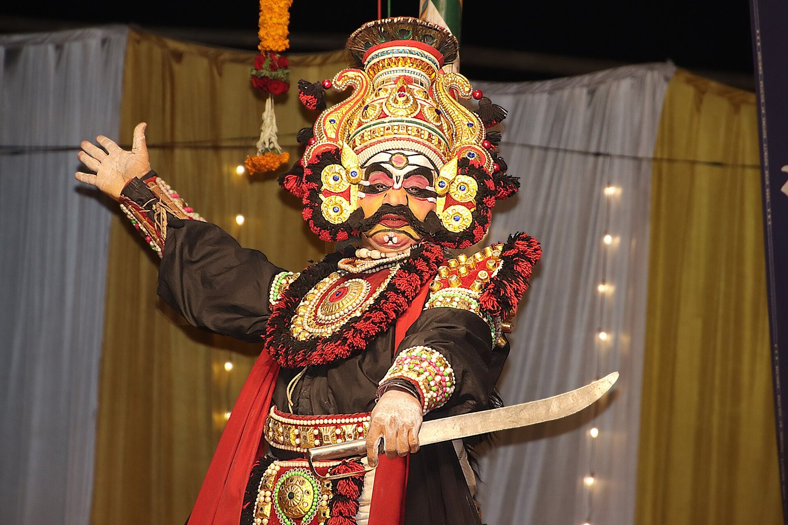
ಕರ್ನಾಟಕದ ಸಾಂಸ್ಕೃತಿಕ ಚೈತನ್ಯಒಂದು ನಾಡು. ಹಲವು ಅಭಿವ್ಯಕ್ತಿಗಳು.
ಕಥೆ, ಸಂಗೀತ, ರಂಗಕಲೆ, ಆರಾಧನೆ ಮತ್ತು ಕರಕುಶಲದ ಮೂಲಕ ಕರ್ನಾಟಕದ ಪರಂಪರೆಯನ್ನು ಅರಿಯೋಣ.
01 / ನಮ್ಮ ಟ್ರಸ್ಟ್ನ ಆಶಯ
ಕರ್ನಾಟಕದ ಜಾನಪದ ಪರಂಪರೆ ಕೇವಲ ಕಲೆಯಲ್ಲ. ಅದು ನಮ್ಮ ಜನರು ತಲೆಮಾರುಗಳಿಂದ ಹೊತ್ತು ತಂದ ನಾಡಿನ ನೆನಪು.
ಕರ್ನಾಟಕ ಜನಪದ ಸೇವಾ ಟ್ರಸ್ಟ್ ಈ ಜೀವಂತ ಪರಂಪರೆಗೆ ಒಗ್ಗಟ್ಟಿನ ಆಶಯವನ್ನು ನೀಡುತ್ತದೆ: ಜಾನಪದ ಸಂಪ್ರದಾಯಗಳನ್ನು ಸಂರಕ್ಷಿಸುವುದು, ಅವುಗಳನ್ನು ಉಳಿಸುವ ಕಲಾವಿದರನ್ನು ಗೌರವಿಸುವುದು ಮತ್ತು ಮುಂದಿನ ತಲೆಮಾರಿಗೆ ಈ ಪರಂಪರೆಯಲ್ಲಿ ಸ್ಥಾನ ಕಲ್ಪಿಸುವುದು.
ನಮ್ಮ ಧ್ಯೇಯವನ್ನು ಅರಿಯಿರಿಪರಂಪರೆಯನ್ನು ಉಳಿಸುವ ಕೈಗಳಿಗೆ ಬಲ ತುಂಬೋಣ.
ಕಲೆಯನ್ನು ಜೀವಂತವಾಗಿಡುವ ಕಲಾವಿದರಿಗೆ ಆದ್ಯತೆ ನೀಡೋಣ.
ಯುವ ಮನಸುಗಳನ್ನು ಅವರ ಪರಂಪರೆಯೊಂದಿಗೆ ಬೆಸೆಯೋಣ.
02 / ಹಲವು ಕಲಾರೂಪಗಳು. ಒಂದೇ ಕರ್ನಾಟಕ.
ಕರಾವಳಿಯಿಂದ ಬಯಲುಸೀಮೆಯವರೆಗೆ,
ನಮ್ಮನ್ನು ಬೆಸೆಯುವ ಪರಂಪರೆಗಳನ್ನು
ಅರಿಯೋಣ.
ನಿಮ್ಮ ಆಸಕ್ತಿಯನ್ನು ಆಯ್ಕೆಮಾಡಿ
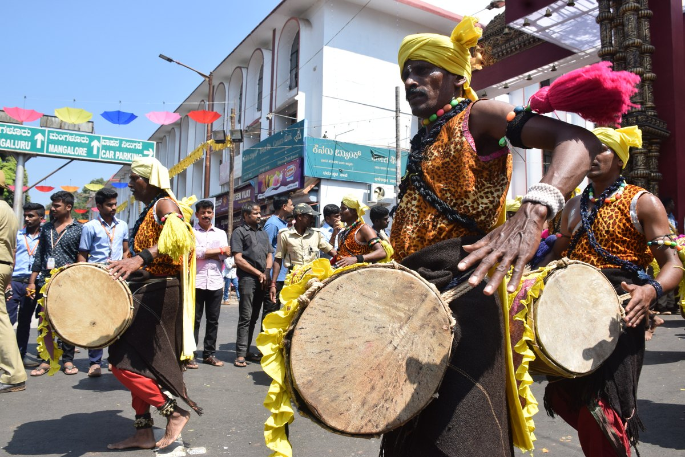
ರಂಗಕಲೆಉತ್ತರ ಕರ್ನಾಟಕದಲ್ಲಿ ಬೇರುಗಳು · ರಾಜ್ಯದಾದ್ಯಂತ ಆಚರಣೆ
ಜನರ ಜೀವನಾಡಿ, ಒಗ್ಗಟ್ಟಿನ ಶಕ್ತಿ.
ವಿವರ ತಿಳಿಯಿರಿಕರಾವಳಿ ಮತ್ತು ಮಲೆನಾಡು · ಕರ್ನಾಟಕದ ಕರಾವಳಿ ಪ್ರದೇಶ
ಪುರಾಣ ಕಥೆಗಳು ರಂಗದ ಮೇಲೆ ಜೀವ ತಳೆಯುವ ಕಲೆ.
ವಿವರ ತಿಳಿಯಿರಿ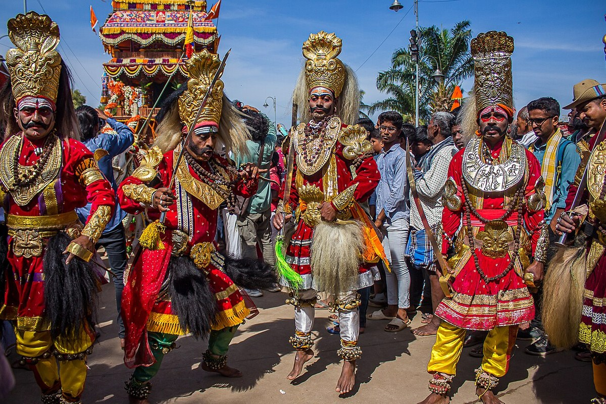
ರಂಗಕಲೆಮಧ್ಯ ಮತ್ತು ದಕ್ಷಿಣ ಕರ್ನಾಟಕ
ಧೈರ್ಯ, ಭಕ್ತಿ ಮತ್ತು ಚೈತನ್ಯದ ಪ್ರಖರ ಅಭಿವ್ಯಕ್ತಿ.
ವಿವರ ತಿಳಿಯಿರಿಛಾಯಾಚಿತ್ರದ ಸಂದರ್ಭ: 2024ರ ಫೆಬ್ರವರಿಯಲ್ಲಿ ದಾಖಲಿಸಿದ ಉತ್ಸವದ ಮೆರವಣಿಗೆಯಲ್ಲಿರುವ ವೀರಗಾಸೆ ಕಲಾವಿದರು.
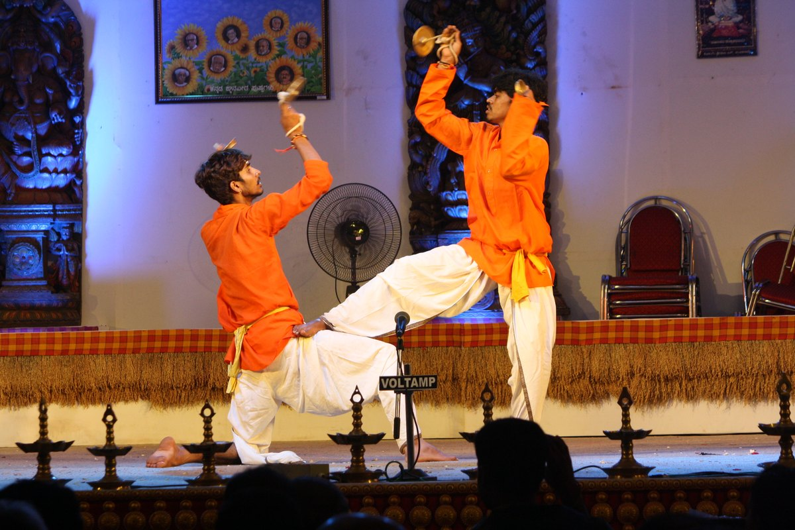
ರಂಗಕಲೆಹಳೆಯ ಮೈಸೂರು ಪ್ರದೇಶ · ಮಲೆ ಮಹದೇಶ್ವರ ಬೆಟ್ಟ
ಪ್ರತಿ ಹೆಜ್ಜೆಯಲ್ಲೂ ಭಕ್ತಿ, ಪ್ರತಿ ನಾದದಲ್ಲೂ ಲಯ.
ವಿವರ ತಿಳಿಯಿರಿ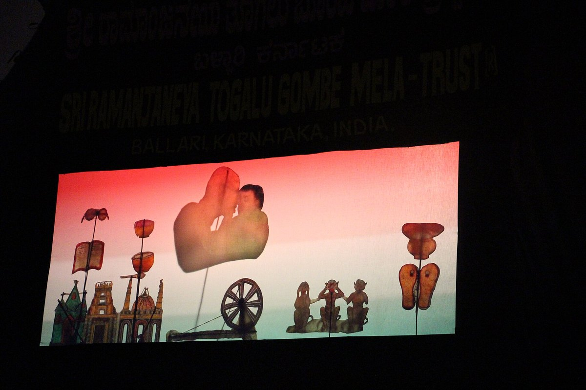
ಗೊಂಬೆಯಾಟಉತ್ತರ ಮತ್ತು ಮಧ್ಯ ಕರ್ನಾಟಕ
ನೆರಳಿನೊಳಗೆ ಜೀವ ತಳೆಯುವ ಅಚ್ಚರಿಯ ಲೋಕ.
ವಿವರ ತಿಳಿಯಿರಿ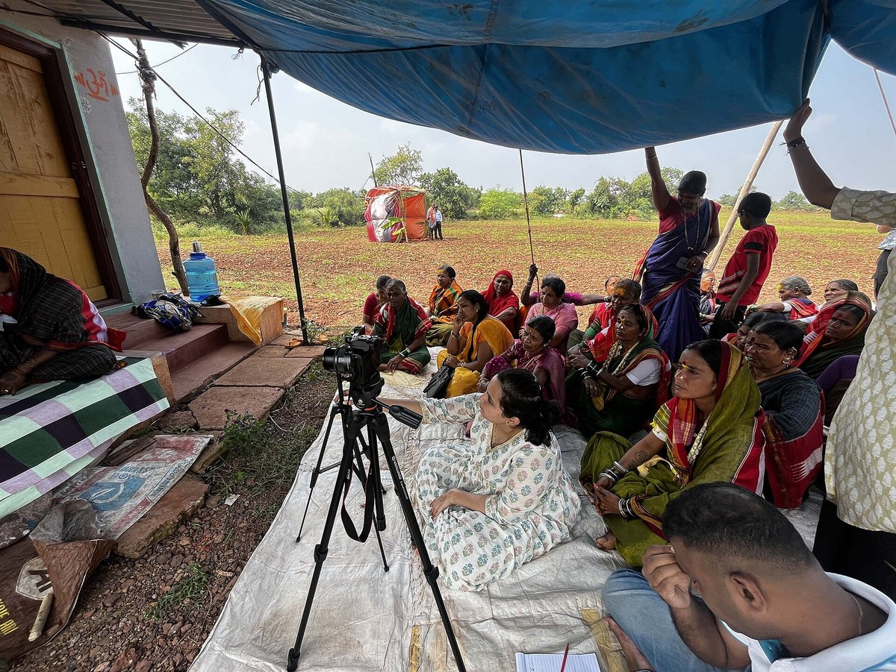
ಸಂಗೀತಕರ್ನಾಟಕ · ಕನ್ನಡ ಮತ್ತು ಪ್ರಾದೇಶಿಕ ಭಾಷಾ ಪರಂಪರೆಗಳು
ದಿನನಿತ್ಯದ ಬದುಕು ಮತ್ತು ನೆನಪುಗಳನ್ನು ಹೊತ್ತ ಹಾಡುಗಳು.
ವಿವರ ತಿಳಿಯಿರಿ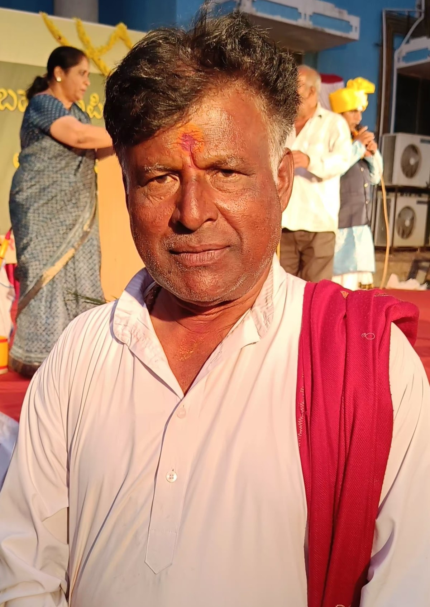
ಸಾಹಿತ್ಯಕರ್ನಾಟಕ · ಸಮುದಾಯಗಳ ವಿಶಿಷ್ಟ ಮೌಖಿಕ ಪರಂಪರೆಗಳು
ತಲೆಮಾರುಗಳ ಕಂಠದಲ್ಲಿ ಜೀವಂತವಾಗಿರುವ ದೀರ್ಘ ಕಥನಗಳು.
ವಿವರ ತಿಳಿಯಿರಿಛಾಯಾಚಿತ್ರದ ಸಂದರ್ಭ: ರಂಗಾಯಣದಲ್ಲಿ ಜನಪದ ಗಾಯಕ ಡಾ. ಮಳವಳ್ಳಿ ಮಹಾದೇವಸ್ವಾಮಿ — ಮೌಖಿಕ ಮಹಾಕಾವ್ಯ ಪರಂಪರೆಯ ಪ್ರಾತಿನಿಧಿಕ ಭಾವಚಿತ್ರ.
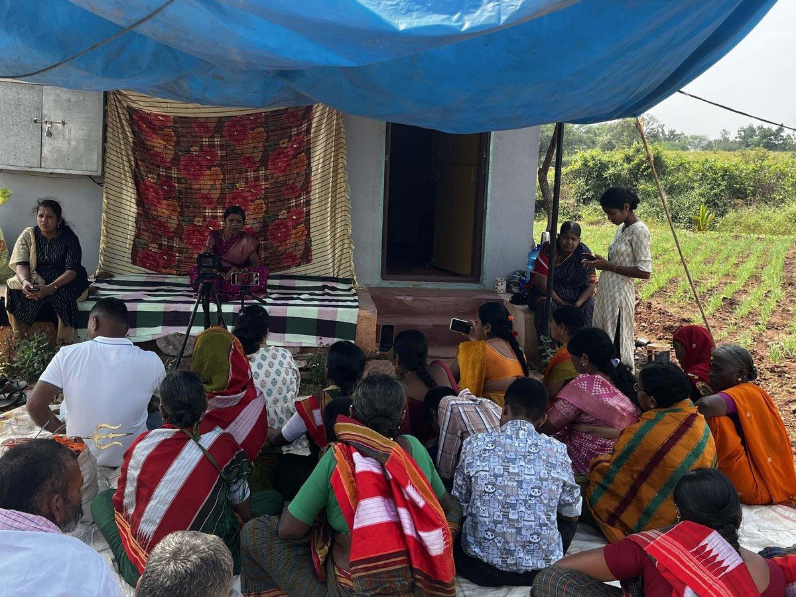
ಸಾಹಿತ್ಯಕರ್ನಾಟಕದಾದ್ಯಂತದ ಸಮುದಾಯಗಳು
ಪ್ರತಿ ನಿರೂಪಣೆಯಲ್ಲೂ ಹೊಸ ಕಂಠ ಪಡೆಯುವ ಕಥೆಗಳು.
ವಿವರ ತಿಳಿಯಿರಿಛಾಯಾಚಿತ್ರದ ಸಂದರ್ಭ: ಕರ್ನಾಟಕದಲ್ಲಿ ಜನಪದ ಹಾಡಿನ ಕ್ಷೇತ್ರ ಧ್ವನಿಮುದ್ರಣ; ಮೌಖಿಕ ಪರಂಪರೆಯ ಪ್ರಸಾರವನ್ನು ಪ್ರತಿನಿಧಿಸುವ ಛಾಯಾಚಿತ್ರ.
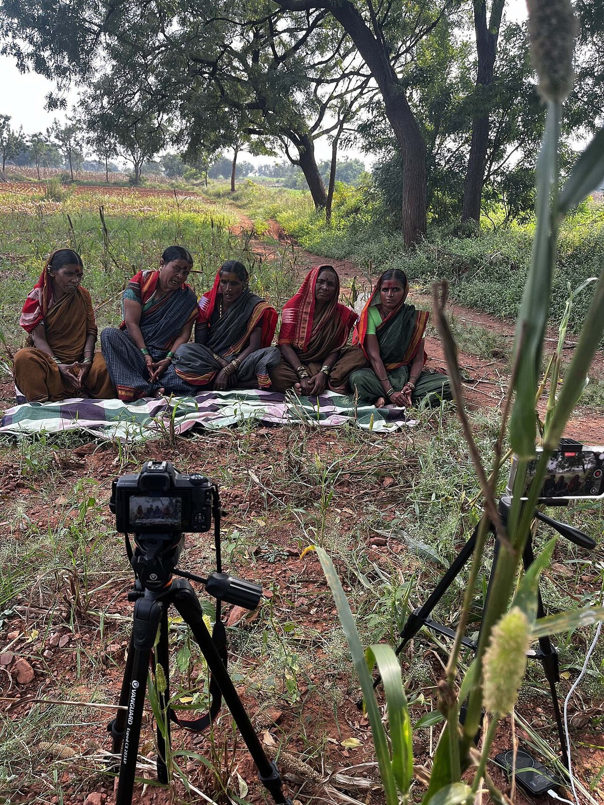
ಸಾಹಿತ್ಯಕರ್ನಾಟಕದ ಕನ್ನಡ ಭಾಷಿಕ ಸಮುದಾಯಗಳು
ಅನುಭವದ ಸಾರವನ್ನು ಹಿಡಿದಿಡುವ ನೆನಪಿನ ಮಾತುಗಳು.
ವಿವರ ತಿಳಿಯಿರಿಛಾಯಾಚಿತ್ರದ ಸಂದರ್ಭ: ಬಾದಾಮಿಯಲ್ಲಿ ಜನಪದ ಹಾಡಿನ ದಾಖಲಾತಿ; ಮೌಖಿಕ ಪರಂಪರೆಯ ಪ್ರಾತಿನಿಧಿಕ ಛಾಯಾಚಿತ್ರ.
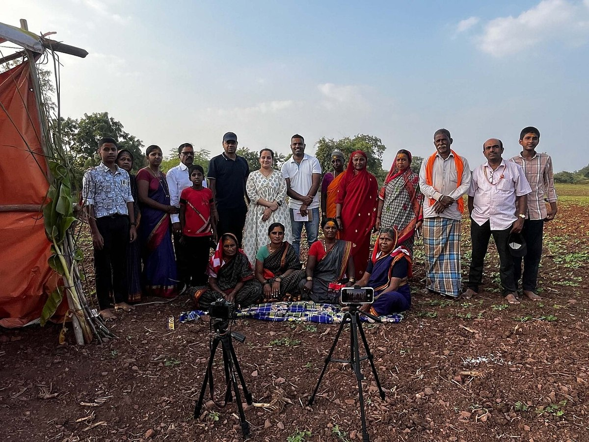
ಸಾಹಿತ್ಯಕರ್ನಾಟಕದ ಕನ್ನಡ ಭಾಷಿಕ ಸಮುದಾಯಗಳು
ಆಟದ ಪ್ರಶ್ನೆ, ಒಟ್ಟಾಗಿ ಕಂಡುಕೊಳ್ಳುವ ಉತ್ತರ.
ವಿವರ ತಿಳಿಯಿರಿಛಾಯಾಚಿತ್ರದ ಸಂದರ್ಭ: ಬಾದಾಮಿಯಲ್ಲಿ ಜನಪದ ಹಾಡಿನ ಸಮೂಹ ಧ್ವನಿಮುದ್ರಣ; ಮೌಖಿಕ ಪರಂಪರೆಯ ಪ್ರಾತಿನಿಧಿಕ ಸನ್ನಿವೇಶ.
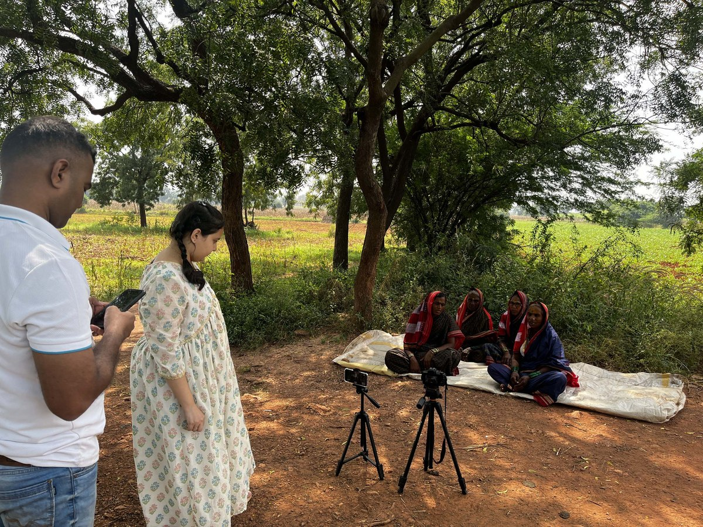
ಸಂಗೀತಕರ್ನಾಟಕ · ಸ್ಥಳೀಯ ಸಮಾರಂಭ ಮತ್ತು ಆಚರಣೆಯ ಹಾಡುಗಳು
ಸ್ಥಳೀಯ ಅರ್ಥಗಳನ್ನು ಹೊತ್ತ ಆಚರಣೆಯ ಕಂಠಗಳು.
ವಿವರ ತಿಳಿಯಿರಿಛಾಯಾಚಿತ್ರದ ಸಂದರ್ಭ: ಕರ್ನಾಟಕದಲ್ಲಿ ಸೋಬಾನೆ ಪದಗಳ ಕ್ಷೇತ್ರ ಧ್ವನಿಮುದ್ರಣ.
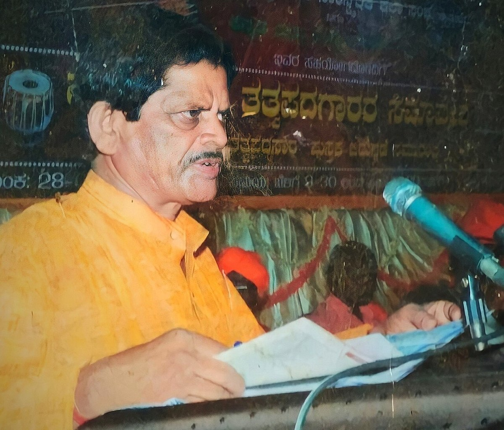
ಸಂಗೀತಉತ್ತರ ಕರ್ನಾಟಕ ಮತ್ತು ಇತರ ಕನ್ನಡ ಭಾಷಿಕ ಸಮುದಾಯಗಳು
ಹಾಡಿನ ಮೂಲಕ ಹತ್ತಿರವಾಗುವ ಬದುಕಿನ ಚಿಂತನೆ.
ವಿವರ ತಿಳಿಯಿರಿಛಾಯಾಚಿತ್ರದ ಸಂದರ್ಭ: 2012ರಲ್ಲಿ ಮಂಡ್ಯದಲ್ಲಿ ನಡೆದ ಮೊದಲ ತತ್ವಪದಕಾರರ ಸಮ್ಮೇಳನದಲ್ಲಿ ಮಾತನಾಡುತ್ತಿರುವ ಚಂದಗಾಲು ಬೋರಪ್ಪ.
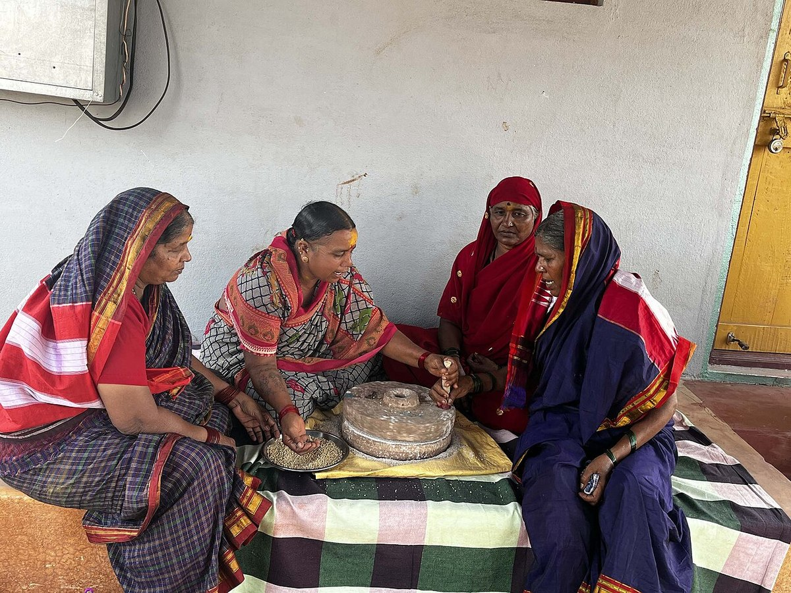
ಸಂಗೀತಕರ್ನಾಟಕ · ಕೃಷಿ ಮತ್ತು ಗೃಹಕಾರ್ಯದ ಹಾಡುಗಳು
ದುಡಿಮೆಯ ಲಯವೇ ಒಟ್ಟಿನ ಹಾಡಾಗುತ್ತದೆ.
ವಿವರ ತಿಳಿಯಿರಿಛಾಯಾಚಿತ್ರದ ಸಂದರ್ಭ: ಕರ್ನಾಟಕದಲ್ಲಿ ಬೀಸುಕಲ್ಲಿನ ಪದಗಳ ಕ್ಷೇತ್ರ ಧ್ವನಿಮುದ್ರಣ.
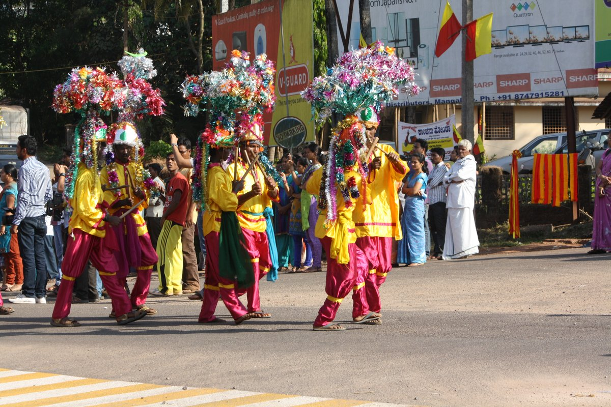
ರಂಗಕಲೆಉತ್ತರ ಕನ್ನಡ · ಹಾಲಕ್ಕಿ ಸಮುದಾಯ
ಸುಗ್ಗಿಯ ಲಯ ಮತ್ತು ವರ್ಣರಂಜಿತ ಶಿರೋಭೂಷಣಗಳಲ್ಲಿ ಸಮುದಾಯದ ಸಂಭ್ರಮ.
ವಿವರ ತಿಳಿಯಿರಿ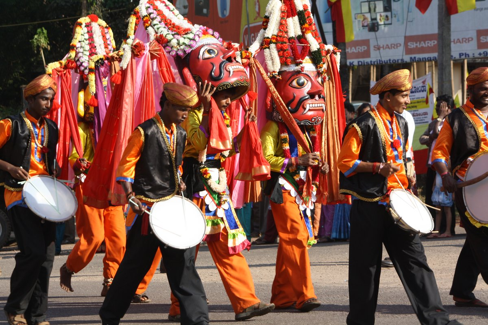
ರಂಗಕಲೆಮಂಡ್ಯ, ಮೈಸೂರು ಮತ್ತು ಹಾಸನ
ಬಣ್ಣದ ಮುಖವಾಡಗಳಲ್ಲಿ ಹಳ್ಳಿಯ ಆರಾಧನಾ ಪರಂಪರೆ ಜೀವಂತವಾಗುತ್ತದೆ.
ವಿವರ ತಿಳಿಯಿರಿ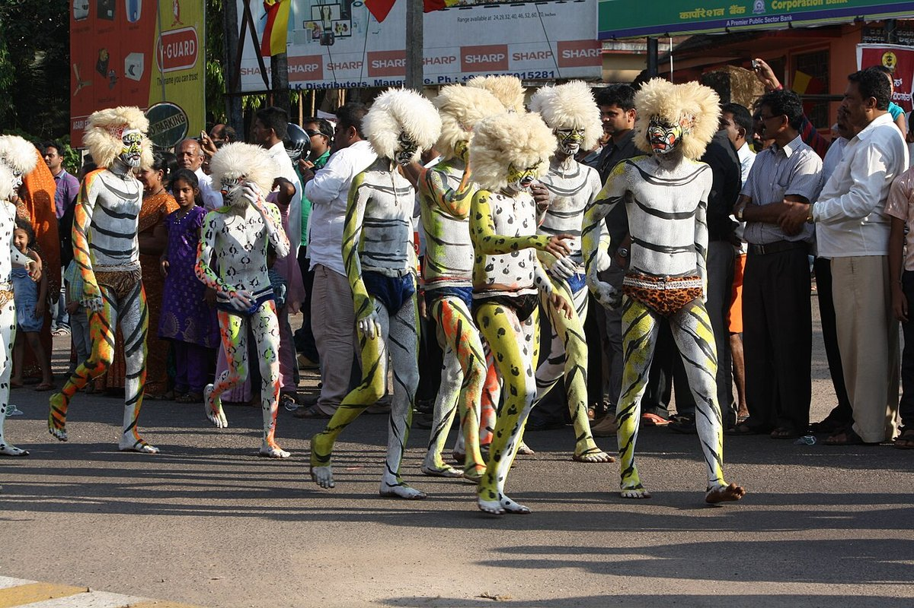
ರಂಗಕಲೆಕರಾವಳಿ ಕರ್ನಾಟಕ · ಉಡುಪಿ ಮತ್ತು ದಕ್ಷಿಣ ಕನ್ನಡ
ಹುಲಿಯ ಬಣ್ಣಗಳಲ್ಲಿ ಉತ್ಸವದ ಬೀದಿಗಳಿಗೆ ಜೀವ ತುಂಬುವ ಕಲಾವಿದರು.
ವಿವರ ತಿಳಿಯಿರಿ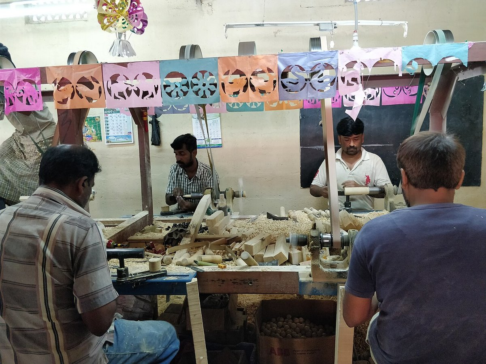
ಕರಕುಶಲಚನ್ನಪಟ್ಟಣ · ಬೆಂಗಳೂರು–ಮೈಸೂರು ಮಾರ್ಗ
ಮರ, ಬಣ್ಣ ಮತ್ತು ಕುಶಲ ಕೈಗಳಲ್ಲಿ ಆಟವೂ ಪರಂಪರೆಯಾಗುತ್ತದೆ.
ವಿವರ ತಿಳಿಯಿರಿ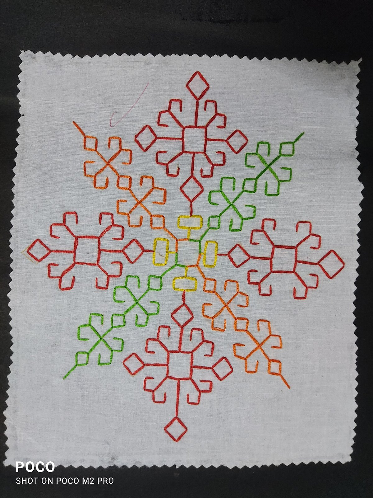
ಕರಕುಶಲಉತ್ತರ ಕರ್ನಾಟಕ · ಧಾರವಾಡ ಮತ್ತು ಸುತ್ತಮುತ್ತ
ಎಣಿಕೆಯ ಹೊಲಿಗೆಗಳಲ್ಲಿ ಬಟ್ಟೆಯ ಮೇಲೆ ಅರಳುವ ನೆನಪಿನ ವಿನ್ಯಾಸ.
ವಿವರ ತಿಳಿಯಿರಿ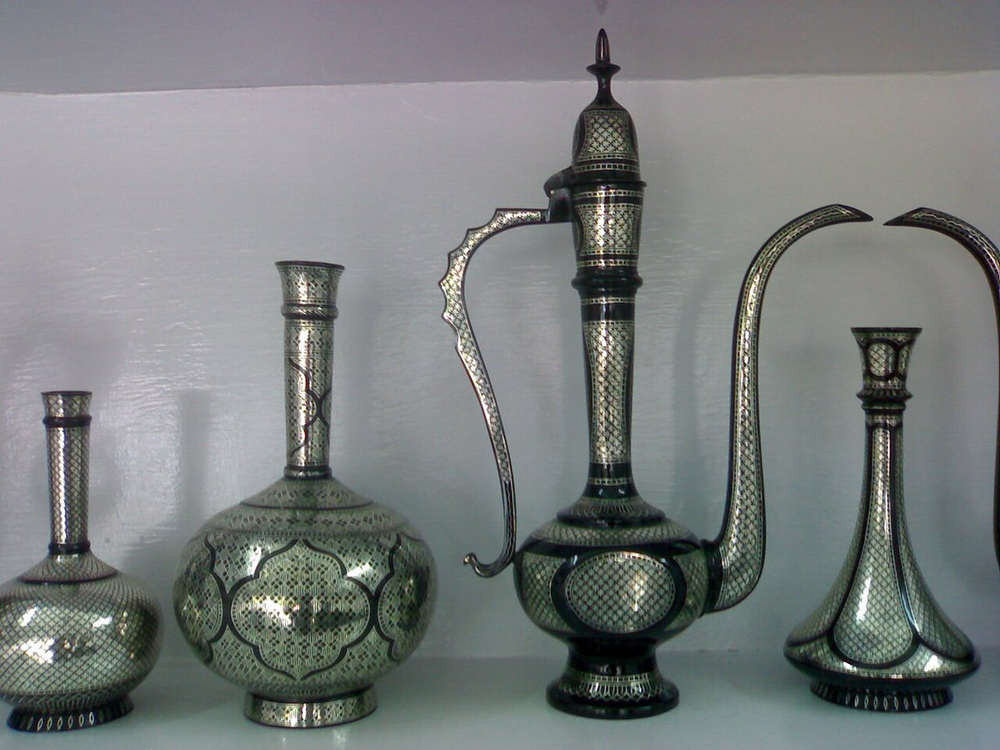
ಕರಕುಶಲಬೀದರ್ · ಈಶಾನ್ಯ ಕರ್ನಾಟಕ
ಕಪ್ಪು ಲೋಹದ ಮೇಲ್ಮೈಯಲ್ಲಿ ಹೊಳೆಯುವ ಲೋಹದ ಜಡಾವು.
ವಿವರ ತಿಳಿಯಿರಿ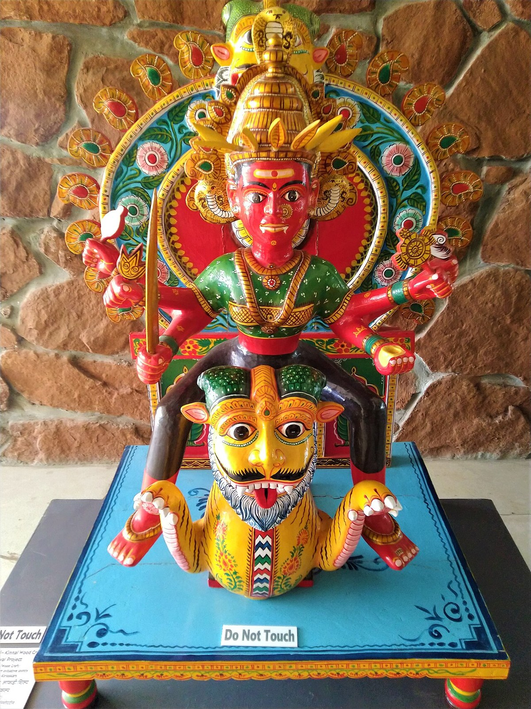
ಕರಕುಶಲಕಿನ್ನಾಳ · ಕೊಪ್ಪಳ ಜಿಲ್ಲೆ
ಕೆತ್ತನೆ ಮತ್ತು ಬಣ್ಣದ ಆಕೃತಿಗಳಲ್ಲಿ ಊರಿನ ಕಲಾಕೌಶಲ್ಯ ಉಳಿಯುತ್ತದೆ.
ವಿವರ ತಿಳಿಯಿರಿಛಾಯಾಚಿತ್ರದ ಸಂದರ್ಭ: ಸಾವಂತವಾಡಿ–ಕಿನ್ನಾಳ ಮರಕುಶಲ ಪುನರುಜ್ಜೀವನ ಯೋಜನೆಯಲ್ಲಿ ರಚಿಸಿದ ದೇವಿ ಮೂರ್ತಿ; ಜಪುರಝಾ ವಸ್ತುಸಂಗ್ರಹಾಲಯದಲ್ಲಿ ತೆಗೆದ ಛಾಯಾಚಿತ್ರ.
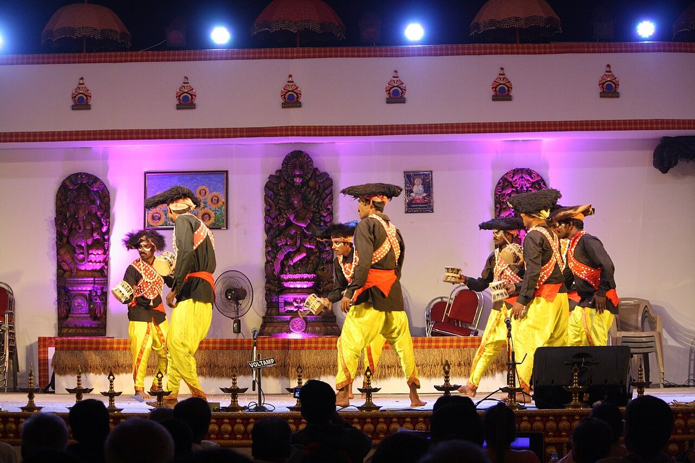
ರಂಗಕಲೆಉತ್ತರ ಕರ್ನಾಟಕ ಮತ್ತು ಮೈಸೂರು ಪ್ರದೇಶ
ಡಮರುಗ, ಪಿಳ್ಳಂಗೋವಿ ಮತ್ತು ಗೊರವರ ಹಾಡಿನಲ್ಲಿ ಮೂಡುವ ಭಕ್ತಿಯ ಕುಣಿತ.
ವಿವರ ತಿಳಿಯಿರಿ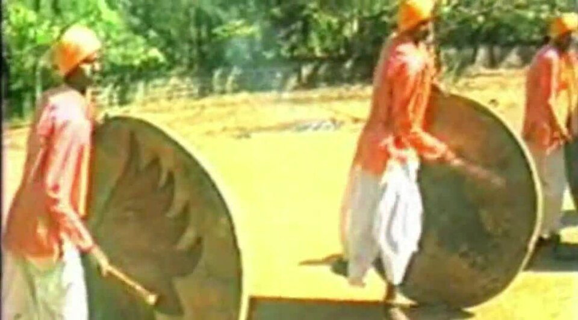
ರಂಗಕಲೆಹುಬ್ಬಳ್ಳಿ–ಧಾರವಾಡ · ಉತ್ತರ ಕರ್ನಾಟಕ
ದೊಡ್ಡ ಚರ್ಮವಾದ್ಯಗಳ ನಾದಕ್ಕೆ ಹೆಜ್ಜೆ ಹಾಕುವ ಹಳ್ಳಿಯ ಮೆರವಣಿಗೆ.
ವಿವರ ತಿಳಿಯಿರಿಛಾಯಾಚಿತ್ರದ ಸಂದರ್ಭ: ಹುಬ್ಬಳ್ಳಿಯ ಬ್ಯಾಹಟ್ಟಿಯಲ್ಲಿ ದಾಖಲಿಸಿದ ಜಗ್ಗಲಿಗೆ ಪ್ರದರ್ಶನದ ಚಲನಚಿತ್ರದಿಂದ ಆಯ್ದ ದೃಶ್ಯ.
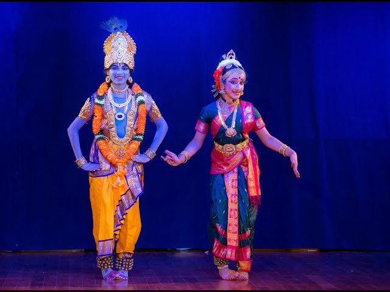
ರಂಗಕಲೆಉತ್ತರ ಕರ್ನಾಟಕ · ಸಂಗೀತಮಯ ಜನಪದ ರಂಗಭೂಮಿ
ಹಾಡು ಮತ್ತು ಸಂಭಾಷಣೆಯಲ್ಲಿ ತೆರೆದುಕೊಳ್ಳುವ ಕೃಷ್ಣ, ಸತ್ಯಭಾಮೆ ಮತ್ತು ಪಾರಿಜಾತದ ಕಥೆ.
ವಿವರ ತಿಳಿಯಿರಿಛಾಯಾಚಿತ್ರದ ಸಂದರ್ಭ: ಕೃಷ್ಣನ ಕಥೆಯನ್ನು ಆಧರಿಸಿದ ರಂಗಪ್ರದರ್ಶನ; ಟ್ರಸ್ಟ್ ಆಯ್ದ ಪ್ರಾತಿನಿಧಿಕ ಛಾಯಾಚಿತ್ರ. ಪ್ರದರ್ಶನದ ಪ್ರಾದೇಶಿಕ ಶೈಲಿಯನ್ನು ಸ್ವತಂತ್ರವಾಗಿ ದೃಢೀಕರಿಸಲಾಗಿಲ್ಲ.
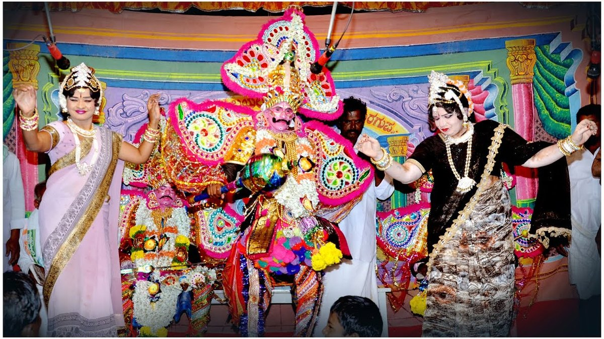
ರಂಗಕಲೆಉತ್ತರ ಕರ್ನಾಟಕ · ಹಳ್ಳಿಯ ರಂಗಪರಂಪರೆಗಳು
ಬಯಲು ರಂಗ, ಹಾಡಿನ ಸಂಭಾಷಣೆ ಮತ್ತು ಬದುಕಿನ ಚತುರ ಹಾಸ್ಯ.
ವಿವರ ತಿಳಿಯಿರಿಛಾಯಾಚಿತ್ರದ ಸಂದರ್ಭ: ಟ್ರಸ್ಟ್ ಆಯ್ದ ಬಯಲಾಟದ ರಂಗದೃಶ್ಯ; ಈ ಛಾಯಾಚಿತ್ರವನ್ನು ಸಣ್ಣಾಟ ಪ್ರದರ್ಶನವೆಂದು ಗುರುತಿಸಲಾಗಿಲ್ಲ.
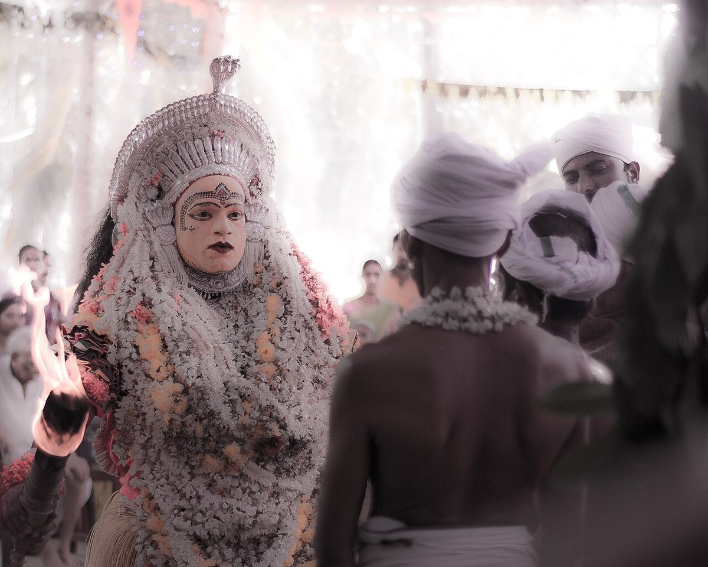
ಆರಾಧನೆತುಳುನಾಡು · ಕರಾವಳಿ ಕರ್ನಾಟಕ
ಸ್ಥಳೀಯ ದೈವಗಳ ಆರಾಧನೆಯಲ್ಲಿ ಒಂದಾಗುವ ಸಮುದಾಯ ಮತ್ತು ಪರಂಪರೆಯ ಕಥನಗಳು.
ವಿವರ ತಿಳಿಯಿರಿ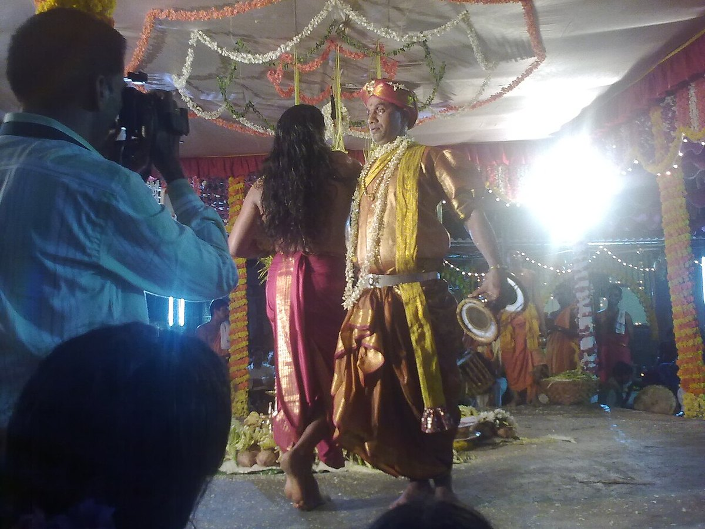
ಆರಾಧನೆಕರಾವಳಿ ಕರ್ನಾಟಕ · ದಕ್ಷಿಣ ಕನ್ನಡ ಮತ್ತು ಉಡುಪಿ
ಬಣ್ಣದ ಮಂಡಲ, ಸಂಗೀತ ಮತ್ತು ಆಚರಣೆಯ ಚಲನೆಯಲ್ಲಿ ಮೂಡುವ ನಾಗಾರಾಧನೆ.
ವಿವರ ತಿಳಿಯಿರಿ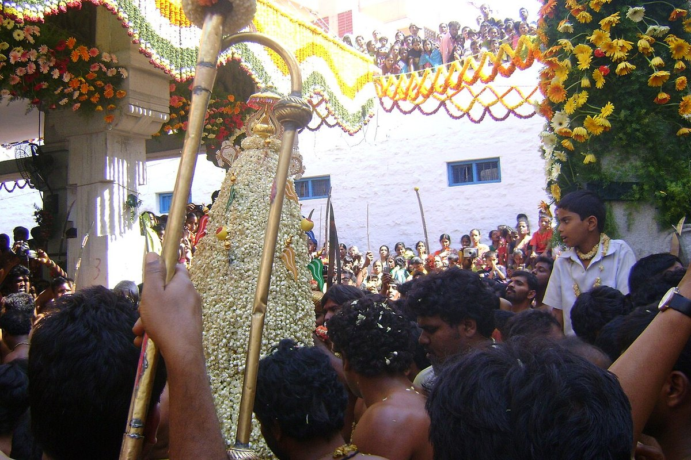
ಆರಾಧನೆಧರ್ಮರಾಯಸ್ವಾಮಿ ದೇವಾಲಯ · ಬೆಂಗಳೂರು
ಭಕ್ತಿ ಮತ್ತು ಸಮುದಾಯದ ನೆನಪಿನೊಂದಿಗೆ ಹಳೆಯ ನಗರದ ಬೀದಿಗಳಲ್ಲಿ ಸಾಗುವ ಹೂವಿನ ಕರಗ.
ವಿವರ ತಿಳಿಯಿರಿ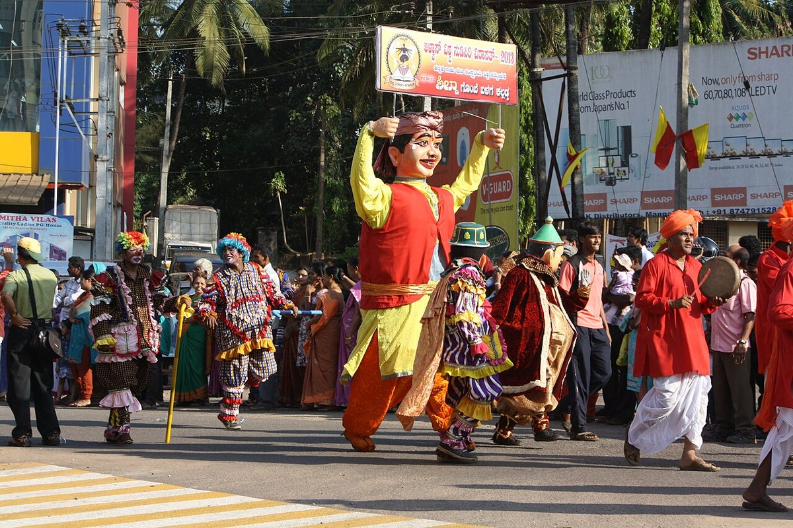
ಗೊಂಬೆಯಾಟಕರ್ನಾಟಕ · ಹಬ್ಬ ಮತ್ತು ಮೆರವಣಿಗೆಯ ಪರಂಪರೆಗಳು
ಮೆರವಣಿಗೆಯನ್ನೇ ಚಲಿಸುವ ರಂಗವಾಗಿಸುವ ಬೃಹತ್ ಗೊಂಬೆಗಳು.
ವಿವರ ತಿಳಿಯಿರಿ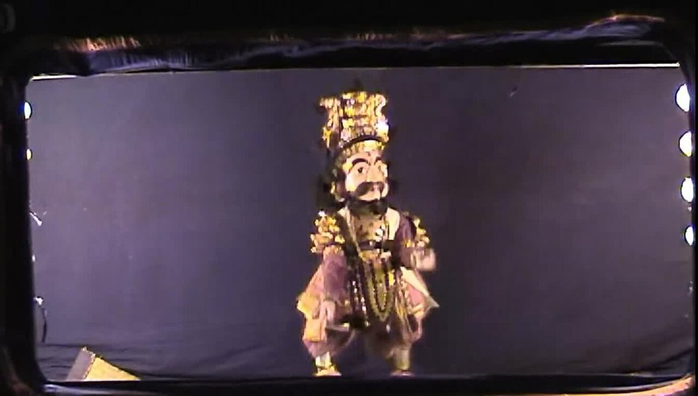
ಗೊಂಬೆಯಾಟಮೈಸೂರು ಪ್ರದೇಶ ಮತ್ತು ಕರಾವಳಿಯ ಸಂಬಂಧಿತ ಸೂತ್ರಗೊಂಬೆ ಪರಂಪರೆಗಳು
ಸೂತ್ರ, ಹಾಡು ಮತ್ತು ಹಿಮ್ಮೇಳದಲ್ಲಿ ಕಥೆ ಹೇಳುವ ಕೆತ್ತಿದ ಮರದ ಗೊಂಬೆಗಳು.
ವಿವರ ತಿಳಿಯಿರಿಛಾಯಾಚಿತ್ರದ ಸಂದರ್ಭ: ಸಂಬಂಧಿತ ಕರ್ನಾಟಕದ ಸೂತ್ರಗೊಂಬೆ ಪರಂಪರೆಯಾದ ಕರಾವಳಿಯ ಯಕ್ಷಗಾನ ಗೊಂಬೆಯಾಟ; ಪ್ರದರ್ಶನದ ದಾಖಲಾತಿಯಿಂದ ಆಯ್ದ ದೃಶ್ಯ.
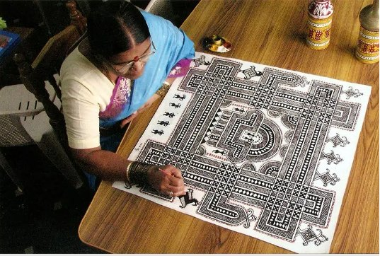
ಕರಕುಶಲಮಲೆನಾಡು · ಶಿವಮೊಗ್ಗ ಮತ್ತು ಉತ್ತರ ಕನ್ನಡ
ಅಕ್ಕಿಯ ಹಿಟ್ಟು ಮತ್ತು ಮಣ್ಣಿನ ಬಣ್ಣದ ರೇಖೆಗಳಲ್ಲಿ ಗೋಡೆ, ಬುಟ್ಟಿಗಳ ಮೇಲೆ ಮೂಡುವ ಸಮುದಾಯದ ಕಥೆಗಳು.
ವಿವರ ತಿಳಿಯಿರಿಉತ್ತರ ಕರ್ನಾಟಕದ ಬೇರುಗಳು · ಕರ್ನಾಟಕದಾದ್ಯಂತ ಬಳಕೆ
ಡೊಳ್ಳು ಕುಣಿತದ ಜೀವನಾಡಿಯಾದ ದೊಡ್ಡ ಚರ್ಮವಾದ್ಯ.
ವಿವರ ತಿಳಿಯಿರಿ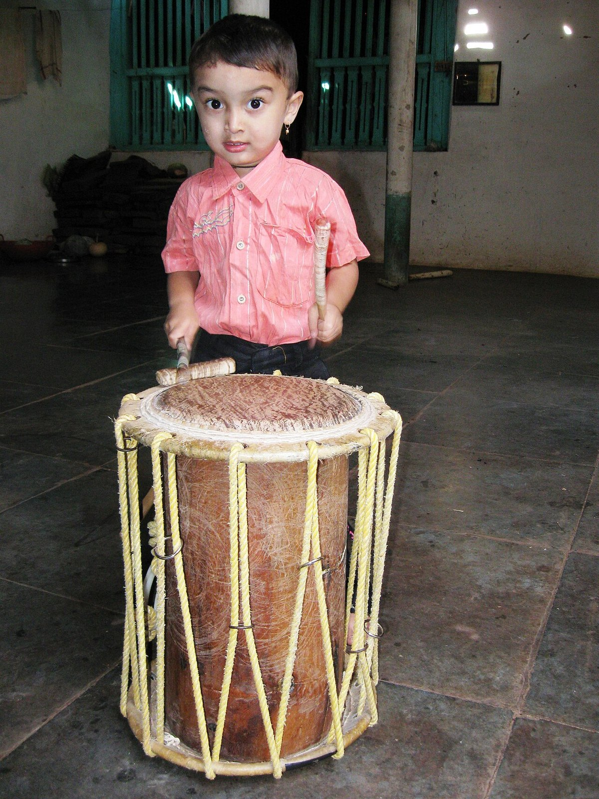
ವಾದ್ಯಗಳುಕರಾವಳಿ ಮತ್ತು ಮಲೆನಾಡು · ಯಕ್ಷಗಾನ
ಯಕ್ಷಗಾನದ ಹಿಮ್ಮೇಳದಲ್ಲಿ ಮೊಳಗುವ ಶಕ್ತಿಯುತ ಚರ್ಮವಾದ್ಯ.
ವಿವರ ತಿಳಿಯಿರಿ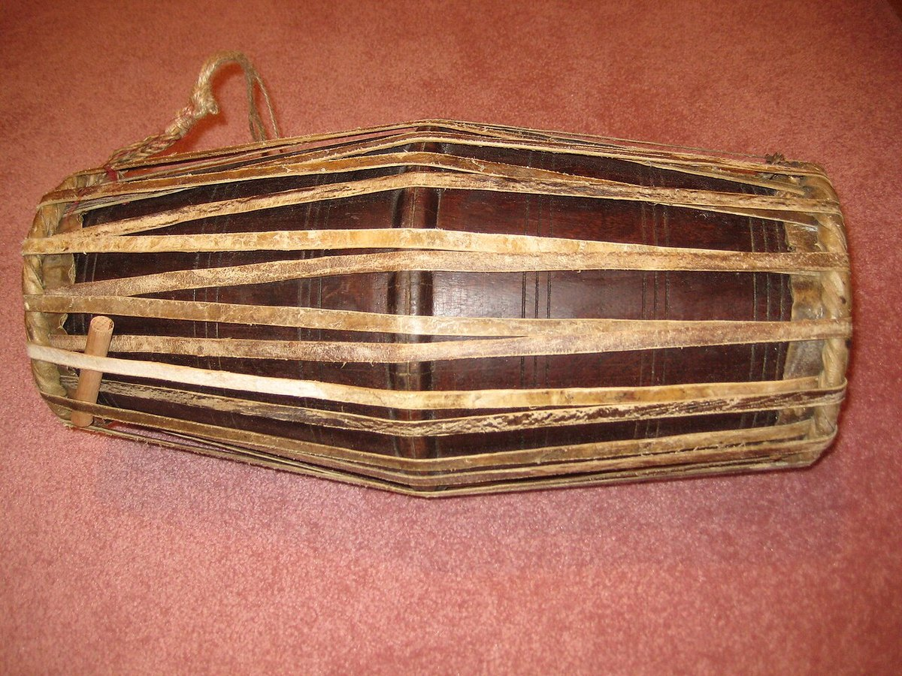
ವಾದ್ಯಗಳುಕರಾವಳಿ ಮತ್ತು ಮಲೆನಾಡು · ಯಕ್ಷಗಾನ ಮತ್ತು ತಾಳಮದ್ದಲೆ
ಗಾಯಕ ಮತ್ತು ಕಥನಕ್ಕೆ ಲಯದ ಆಸರೆ ನೀಡುವ ಕೈವಾದ್ಯ.
ವಿವರ ತಿಳಿಯಿರಿ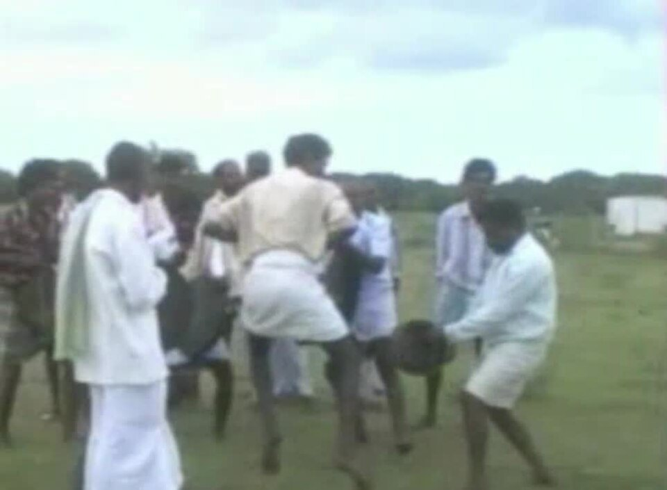
ವಾದ್ಯಗಳುಹಳೇ ಮೈಸೂರು ಪ್ರದೇಶ · ಸಮುದಾಯದ ತಾಳಪರಂಪರೆಗಳು
ಹಳ್ಳಿಯ ಕೂಟ ಮತ್ತು ಆಚರಣೆಯ ಬದುಕಿನಲ್ಲಿ ಮೊಳಗುವ ಚರ್ಮವಾದ್ಯ.
ವಿವರ ತಿಳಿಯಿರಿಛಾಯಾಚಿತ್ರದ ಸಂದರ್ಭ: ಸೋಲಿಗ ಸಮುದಾಯದ ತಮಟೆ ಪ್ರದರ್ಶನದ ದಾಖಲಾತಿಯಿಂದ ಆಯ್ದ ದೃಶ್ಯ.
ಮೈಸೂರು, ಮಂಡ್ಯ ಮತ್ತು ಚಾಮರಾಜನಗರ
ಹಾಡು, ಚಲನೆ ಮತ್ತು ಭಕ್ತಿಯೊಂದಿಗೆ ಬೆರೆಯುವ ಕೈಯ ಲೋಹವಾದ್ಯ.
ವಿವರ ತಿಳಿಯಿರಿಗೊರವರ ಭಕ್ತಿಪರಂಪರೆಗಳು · ಕರ್ನಾಟಕ
ಗೊರವರ ಕುಣಿತದಲ್ಲಿ ಕೈಯಲ್ಲಿ ಹಿಡಿದು ಬಾರಿಸುವ ಸಣ್ಣ ಡಮರುಗ.
ವಿವರ ತಿಳಿಯಿರಿಮೈಸೂರು ಮತ್ತು ದಕ್ಷಿಣ ಕರ್ನಾಟಕ · ತಂತಿವಾದ್ಯ ಪರಂಪರೆ
ಸೋರೆಬುರುಡೆಗಳ ಅನುರಣನದೊಂದಿಗೆ ಮೌಖಿಕ ಸಂಗೀತಕ್ಕೆ ಆಸರೆ ನೀಡುವ ತಂತಿವಾದ್ಯ.
ವಿವರ ತಿಳಿಯಿರಿ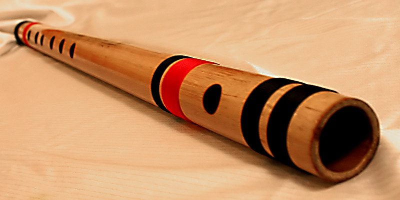
ವಾದ್ಯಗಳುಕರ್ನಾಟಕದ ಜನಪದ ಸಂಗೀತ · ಗೊರವ ಪರಂಪರೆಯಲ್ಲಿಯೂ ಬಳಕೆ
ಉಸಿರು ಮತ್ತು ಬೆರಳ ಚಲನೆಯಲ್ಲಿ ಬಿದಿರಿನ ಕೊಳವೆಯಿಂದ ಮೂಡುವ ಸ್ವರ.
ವಿವರ ತಿಳಿಯಿರಿಛಾಯಾಚಿತ್ರದ ಸಂದರ್ಭ: ಬಿದಿರಿನ ಅಡ್ಡಕೊಳಲು; ಭಾರತದ ಹಲವೆಡೆ ಬಳಕೆಯಲ್ಲಿರುವ ಈ ವಾದ್ಯವನ್ನು ಕನ್ನಡದ ಪಿಳ್ಳಂಗೋವಿಯ ಪ್ರಾತಿನಿಧಿಕ ಚಿತ್ರವಾಗಿ ತೋರಿಸಲಾಗಿದೆ.
ನಿಮ್ಮ ಹುಡುಕಾಟ ಮತ್ತು ಆಯ್ಕೆಗಳಿಗೆ ಹೊಂದುವ ಪರಂಪರೆಗಳಿಲ್ಲ. ಆಯ್ಕೆಗಳನ್ನು ಅಳಿಸಿ ಅಥವಾ ಬೇರೆ ಹೆಸರು ಹುಡುಕಿ.
ಸಮುದಾಯಗಳೊಂದಿಗೆ ಪರಂಪರೆಗಳೂ ಪಯಣಿಸುತ್ತವೆ. ಇಲ್ಲಿ ಸೂಚಿಸಿರುವ ಪ್ರದೇಶಗಳು ಅವುಗಳ ನಂಟನ್ನು ತಿಳಿಸುತ್ತವೆ; ಗಡಿಗಳನ್ನು ನಿಗದಿಪಡಿಸುವುದಿಲ್ಲ.
ನಮ್ಮ ಪರಂಪರೆಯ ನಾದ
ಸಮುದಾಯದ ಹಾಡು, ರಂಗಭೂಮಿ ಮತ್ತು ಆರಾಧನೆಯ ಜೊತೆಗಿರುವ ತಾಳ, ತಂತಿ ಮತ್ತು ಗಾಳಿವಾದ್ಯಗಳನ್ನು ಪರಿಚಯಿಸಿಕೊಳ್ಳಿ. ಕೆಲವು ವಾದ್ಯಕುಟುಂಬಗಳು ಭಾರತದ ಇತರೆ ಪ್ರದೇಶಗಳಲ್ಲಿಯೂ ಬಳಕೆಯಲ್ಲಿವೆ.
ತಾಳವಾದ್ಯ
ಡೊಳ್ಳು ಕುಣಿತದ ಜೀವನಾಡಿಯಾದ ದೊಡ್ಡ ಚರ್ಮವಾದ್ಯ.
ಈ ವಾದ್ಯವನ್ನು ಪರಿಚಯಿಸಿಕೊಳ್ಳಿ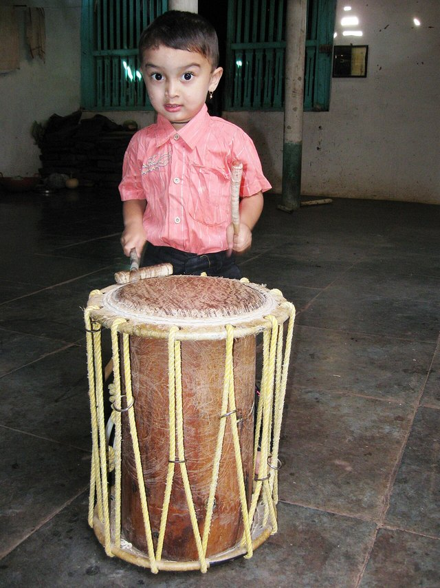
ತಾಳವಾದ್ಯ
ಯಕ್ಷಗಾನದ ಹಿಮ್ಮೇಳದಲ್ಲಿ ಮೊಳಗುವ ಶಕ್ತಿಯುತ ಚರ್ಮವಾದ್ಯ.
ಈ ವಾದ್ಯವನ್ನು ಪರಿಚಯಿಸಿಕೊಳ್ಳಿತಾಳವಾದ್ಯ
ಗಾಯಕ ಮತ್ತು ಕಥನಕ್ಕೆ ಲಯದ ಆಸರೆ ನೀಡುವ ಕೈವಾದ್ಯ.
ಈ ವಾದ್ಯವನ್ನು ಪರಿಚಯಿಸಿಕೊಳ್ಳಿತಾಳವಾದ್ಯ
ಹಳ್ಳಿಯ ಕೂಟ ಮತ್ತು ಆಚರಣೆಯ ಬದುಕಿನಲ್ಲಿ ಮೊಳಗುವ ಚರ್ಮವಾದ್ಯ.
ಈ ವಾದ್ಯವನ್ನು ಪರಿಚಯಿಸಿಕೊಳ್ಳಿಲೋಹದ ತಾಳವಾದ್ಯ
ಹಾಡು, ಚಲನೆ ಮತ್ತು ಭಕ್ತಿಯೊಂದಿಗೆ ಬೆರೆಯುವ ಕೈಯ ಲೋಹವಾದ್ಯ.
ಈ ವಾದ್ಯವನ್ನು ಪರಿಚಯಿಸಿಕೊಳ್ಳಿತಾಳವಾದ್ಯ
ಗೊರವರ ಕುಣಿತದಲ್ಲಿ ಕೈಯಲ್ಲಿ ಹಿಡಿದು ಬಾರಿಸುವ ಸಣ್ಣ ಡಮರುಗ.
ಈ ವಾದ್ಯವನ್ನು ಪರಿಚಯಿಸಿಕೊಳ್ಳಿತಂತಿವಾದ್ಯ
ಸೋರೆಬುರುಡೆಗಳ ಅನುರಣನದೊಂದಿಗೆ ಮೌಖಿಕ ಸಂಗೀತಕ್ಕೆ ಆಸರೆ ನೀಡುವ ತಂತಿವಾದ್ಯ.
ಈ ವಾದ್ಯವನ್ನು ಪರಿಚಯಿಸಿಕೊಳ್ಳಿಗಾಳಿವಾದ್ಯ
ಉಸಿರು ಮತ್ತು ಬೆರಳ ಚಲನೆಯಲ್ಲಿ ಬಿದಿರಿನ ಕೊಳವೆಯಿಂದ ಮೂಡುವ ಸ್ವರ.
ಈ ವಾದ್ಯವನ್ನು ಪರಿಚಯಿಸಿಕೊಳ್ಳಿ03 / ನಮ್ಮ ಆಶಯಗಳಿಗೆ ಕಾರ್ಯರೂಪ
ಸಂಸ್ಕೃತಿಯ ಸಂರಕ್ಷಣೆ ಮತ್ತು ಸಮುದಾಯದ ಕಾಳಜಿಯನ್ನು ಬೆಸೆಯುವುದು ನಮ್ಮ ಆಶಯ. ಈ ಆದ್ಯತೆಗಳತ್ತ ನಾವು ಹೆಜ್ಜೆ ಇಡುತ್ತಿದ್ದೇವೆ.
ಜಾನಪದ ಕಲಾವಿದರು ಮತ್ತು ಸಮುದಾಯಗಳನ್ನು ಒಗ್ಗೂಡಿಸಿ, ಹೊಸ ಪ್ರೇಕ್ಷಕರಿಗೆ ಕರ್ನಾಟಕದ ಕಲಾರೂಪಗಳನ್ನು ಪರಿಚಯಿಸುವ ಸಾಂಸ್ಕೃತಿಕ ಸಮಾಗಮಗಳು.
ನಮ್ಮ ಗಮನನಮ್ಮ ಪರಂಪರೆಯನ್ನು ಜೀವಂತವಾಗಿಡುವ ಕಲಾವಿದರಿಗಾಗಿ ಕಲ್ಯಾಣ ಕಾರ್ಯಕ್ರಮಗಳು, ಆರೋಗ್ಯ ಸೇವೆ ಮತ್ತು ನೆರವು ನಿಧಿಯನ್ನು ರೂಪಿಸುವ ಆಶಯ.
ಪ್ರಸ್ತಾವಿತ ಆದ್ಯತೆಅಳಿವಿನಂಚಿನ ಜಾನಪದ ಪರಂಪರೆಗಳನ್ನು ಮುಂದಿನ ತಲೆಮಾರಿಗೆ ತಲುಪಿಸಲು ಜಿಲ್ಲಾ ಮಟ್ಟದ ಕಾರ್ಯಾಗಾರಗಳು, ಯುವಜನರ ಕಲಿಕಾ ಅವಕಾಶಗಳು ಮತ್ತು ಡಿಜಿಟಲ್ ಸಂಗ್ರಹಾಲಯ.
ಮುಂದಿನ ಹೆಜ್ಜೆಗಳು04 / ಒಂದೇ ಆಶಯದೊಂದಿಗೆ
ಕರ್ನಾಟಕ ಜನಪದ ಸೇವಾ ಟ್ರಸ್ಟ್ನ
ನಾಯಕತ್ವದ ಪರಿಚಯ.
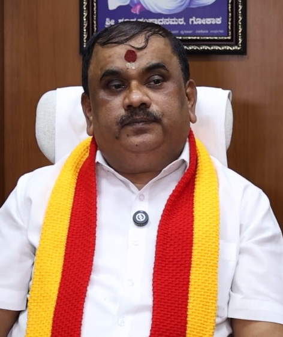
ಕರ್ನಾಟಕ ಜನಪದ ಸೇವಾ ಟ್ರಸ್ಟ್
ಕರ್ನಾಟಕದ ಜಾನಪದ ಪರಂಪರೆ ಮತ್ತು ಸಮುದಾಯದ ಕಲ್ಯಾಣದತ್ತ ಟ್ರಸ್ಟ್ನ ಬದ್ಧತೆಯನ್ನು ಮುನ್ನಡೆಸುತ್ತಿದ್ದಾರೆ.
ನಮ್ಮ ಪರಂಪರೆಯಲ್ಲಿ ನಿಮಗೂ ಒಂದು ಸ್ಥಾನವಿದೆ.
ನಿಮ್ಮ ಸಮಯ ನೀಡಿ. ನಿಮ್ಮ ತಿಳಿವನ್ನು ಹಂಚಿಕೊಳ್ಳಿ. ಕಲಾವಿದರ ಜೊತೆ ನಿಲ್ಲಿ.
ಪರಂಪರೆಯನ್ನು
ಜೀವಂತವಾಗಿಡಲು ಹಲವು ದಾರಿಗಳಿವೆ.